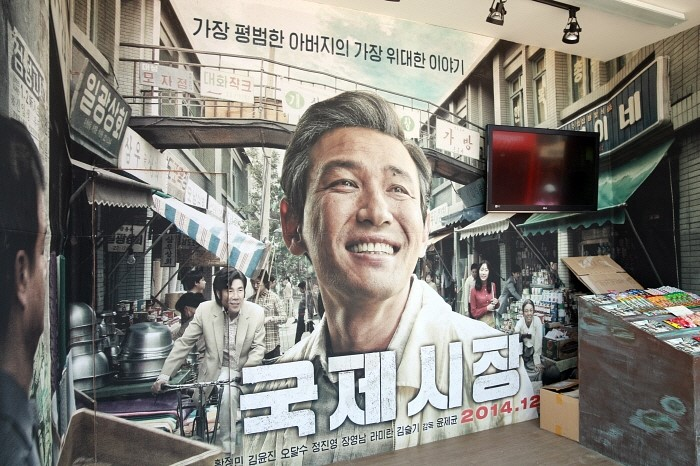

Go the the home!
Travel the Busan!
Introduce the International market

The international market is a traditional market located in Sinchang-dong, Jung-gu, Busan. It opens from 9:30 a.m. to 7:30 p.m., with the first and third Sundays off. When the Japanese withdrew from Korea in 1945, the market naturally formed when the Japanese were liberated from Japanese colonial rule, and after the Korean War in 1950, smuggled goods were distributed through the port of Busan and U.S. military supplies, which expanded the market's scale. A film of the same name set in the market was released in December 2014.
The urban railway line leading to the international market is Line 1 (Nampo Station, Jagalchi Station) and other famous places around the world are Yongdusan Park, Jagalchi Market and Yeongdo Bridge.
Select the place where you want to see in Busan
- Haeundae
- Gwanganri
- International market
- Gamcheon Culture Village
- Samrak Park